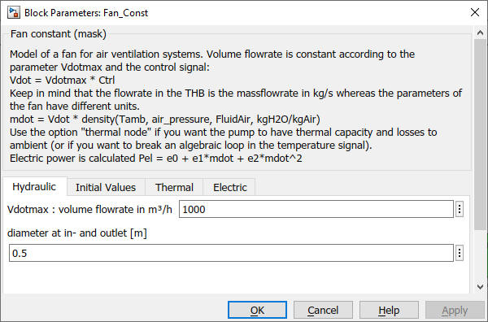
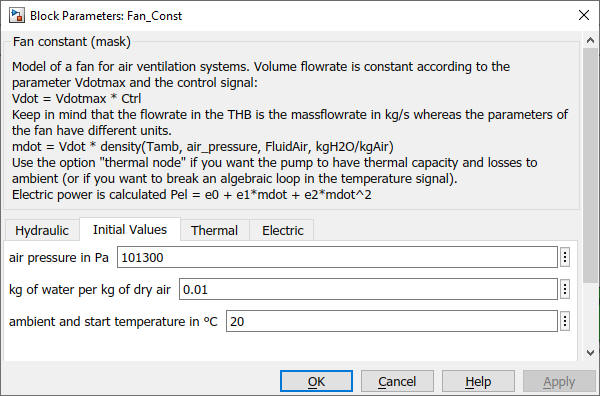
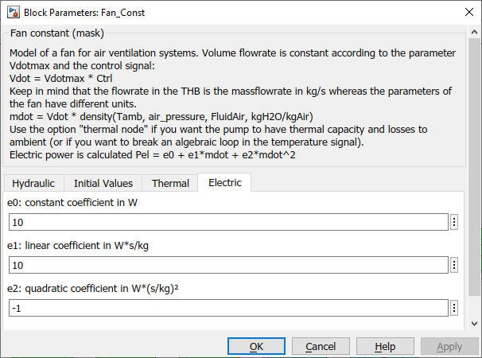

Fan_Const
Fan_Const Path: CARNOT/Hydraulics
Fan_Const
Path: CARNOT/Hydraulics
Purpose
Very simple fan model
for air ventilation systems
with a pressure independant flow rate.
Description
This is a simple fan model: The mass flow is set to the maximum mass flow rate specified in the mask multiplied with the control signal.
Vdot = Vdotmax * Ctrl
The flowrate in the THB is the massflowrate in kg/s whereas the parameters of the fan is in m³/h. The volume flow rate is converted to mass flow rate by multiplying the value with the air density at given pressure, ambient temperature and humidity (parameters in the mask).
mdot = Vdot/3600 * density(Tamb, air_pressure, FluidAir, kgH2O/kgAir)
The model is based on the Pump_Const model. In addition to the Pump_basic the model has a thermal node for thermal losses (and to break algebraic loops in the temperature signal).
The electric power consumption of the pump is given by a quadradic polynom:
Pel = e0 + e1*mdot + e2*mdot²
Inputs:
Outputs:
Parameters and Dialog Box




Characteristics
Direct Feedthrough No
Sample
time
Inherited
from driving block
Vectorized
No